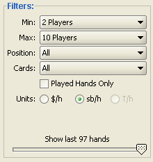

Hand Filters
Several filters are available from the Filters panel. A filter will let you look at only a
specific subset of the hands you have played. For instance, if you wanted to show only statistics
from heads-up games, select Max -> 2 Players. You can also filter
the statistics based on your position. For instance, to show only hands where you were in the big
blind, select Position -> Big Blind . Filters are applied to all hands on all
tabs.

- Min
- Minimum number of players per hand.
- Max
- Maximum number of players per hand.
- Position
- Seat position the player is sitting at for the hand.
- Cards
- Hole card for the player.
- Pairs
- Two cards of the same rank.
- Suited Connectors
- Two cards of the same suit and their rank is within one of each other.
- Offsuit Connectors
- Two cards of the different suit and their is are within one of each other.
- Any Ace
- One of the two cards is an Ace
- Groups:
- Groups 1 to 8 refer to the groups of starting cards that David Sklansky made popular in
his books:
- Group 1
- AA KK QQ JJ AKs
- Group 2
- TT AQs AJs KQs AKo
- Group 3
- 99 JTs QJs KJs ATs AQo
- Group 4
- T9s KQo 88 QTs 98s J9s AJo KTs
- Group 5
- 77 87s Q9s T8s KJo QJo JTo 76s 97s A9s A8s A7s A6s A5s A4s A3s A2s 65s
- Group 6
- 66 ATo 55 86s KTo QTo 54s K9s J8s 75s
- Group 7
- 44 J9o 64s T9o 53s 33 98o 43s 22 K8s K7s K6s K5s K4s K3s K2s T7s Q8s
- Group 8
- 87o A9o Q9o 76o 42s 32s 96s 85s J8o J7s 65o 54o 74s K9o T8o 43o
- Played Hands Only
- A hand that was played
- Hands Slider
- Move the slider to display a limited number of hands
Units
- $/h
- Dollars per Hand. This unit type should be used if
you want to see how an actual poker bankroll would have changed
over the selected sessions. For ring games, if you select
this unit type, the graph will show the selected player's winnings in
dollars. For tournaments, this unit type causes the graph to map the
selected player's tournament chips throughout a tournament session to
predicted tournament winnings in dollars. This is done using a variant
of the Independent Chip Model (ICM). At
the start of each tournament there will be a sharp drop and this corresponds
to the rake taken to play the tournament. Also, while a tournament is
unfinished, it is plotted in gray and does not count toward the current
bankroll until it is is finished.
- sb/h
- Small Bets per Hand. A small bet is equal to a big
blind. When this unit type is selected, all of a player's winnings in a
hand are converted into a multiple of the size of the small bet for that
hand and then plotted. This type of unit is useful when you want to
view your win rate across sessions of games with different sized stakes.
It is important to be aware that for tournaments the size of the small bet
increases as the levels in a tournament increase. As a result, care should
be taken when interpreting a graph plotted using this unit type if the
sessions selected include both ring and tournament sessions.
- T/h
- Tournament Chips per Hand. This unit type is for when
you want to plot the size of your stack of tournament chips thoughout
a tournament. When this unit type is selected, the size of the big
blind is plotted alongside your tournament chip graph so you
can easily see the information together. Note, this option is only
available to be selected when your selected sessions are purely
tournaments and is best viewed a single tournament at a time.